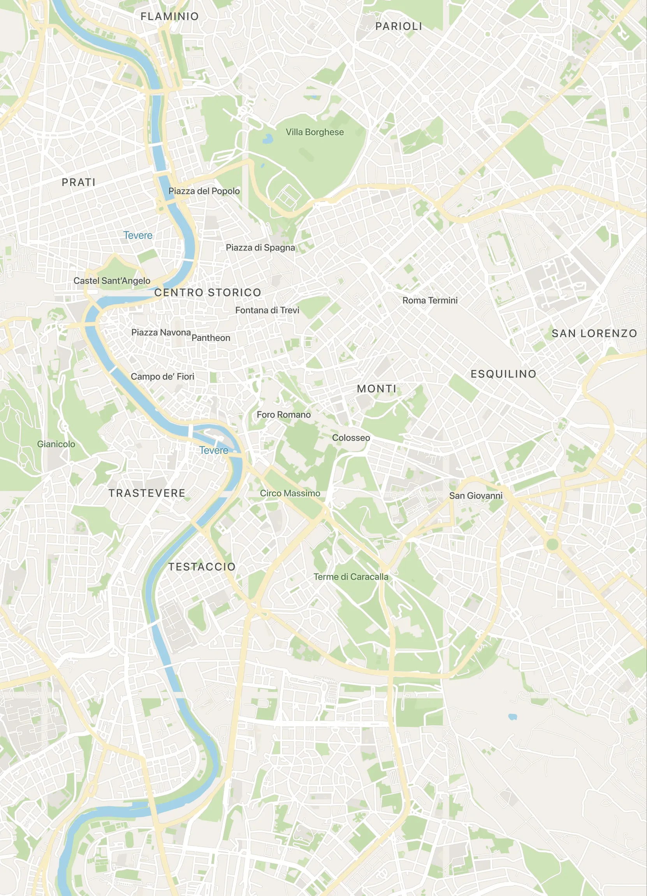
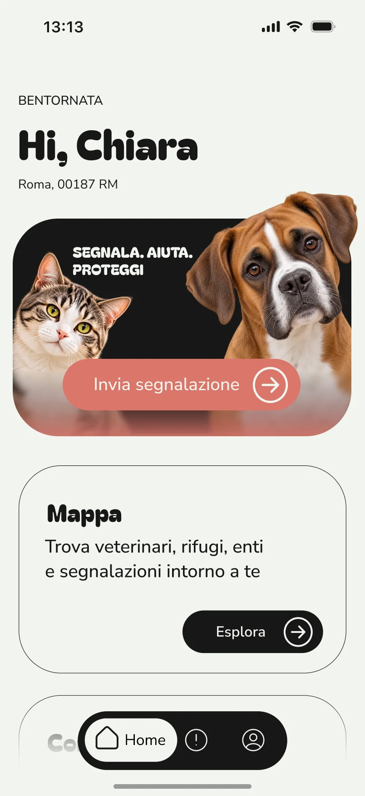
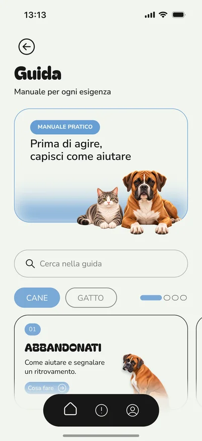
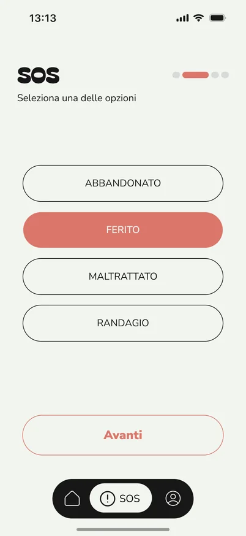
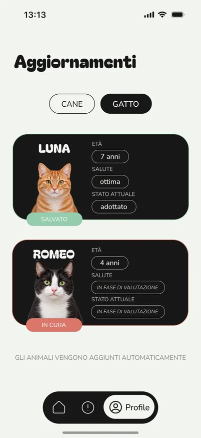

Mappa
Trascina per esplorare · tocca un segnaposto
Zona di Roma
Segnala. Aiuta. Proteggi.
Hai trovato un cane o un gatto in difficoltà? Con PAWAY puoi capire cosa fare e inviare una segnalazione.

Come funziona

Trova la guida e i contatti utili.

Descrivi l’animale, la situazione e il luogo.

Ritrova le tue segnalazioni e gli aggiornamenti nell’app.
Nell’app

Trascina per esplorare · tocca un segnaposto
Zona di Roma
Quattro situazioni da cui partire.
Prima di agire, capisci come aiutare. Una scheda per ogni esigenza.
L’assistente che ti accompagna nella segnalazione.
Enti e forze dell’ordine, pronti da chiamare anche offline.
La guida e la segnalazione, sempre con te.
Disponibile prossimamente